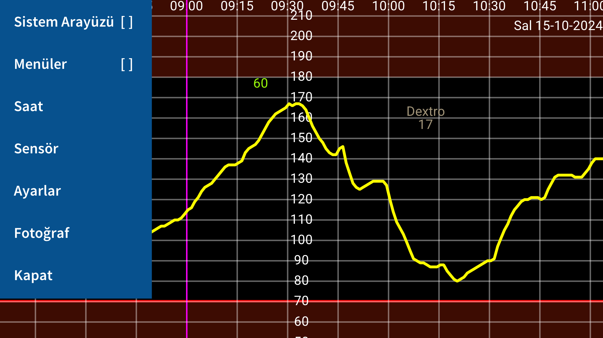
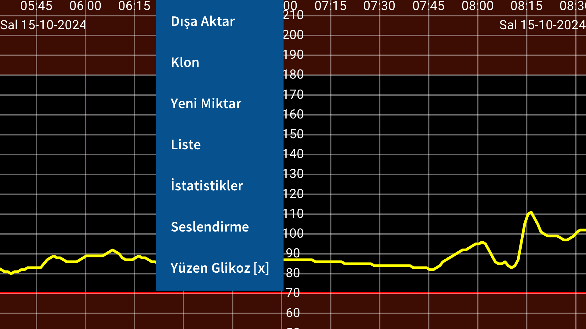
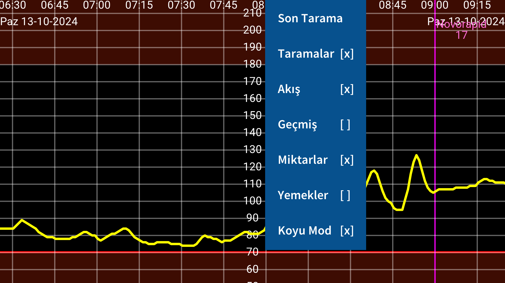
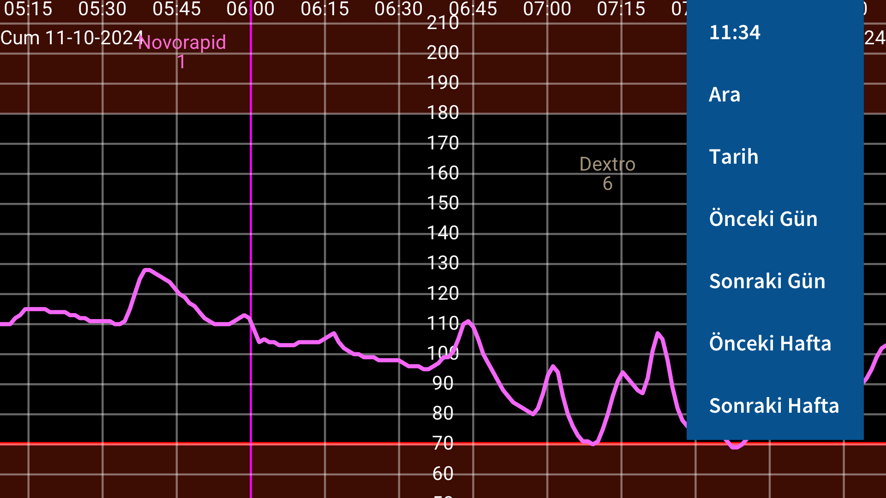

Juggluco diyabetli kisilerde kan sekerinin kontrolü için bir uygulamadir. Freestyle Libre (0 ve 2) sensörlerini tarayabilir (NFC araciligiyla) ve Freestyle Libre 2 ve 3, Sibionics GS1/GS1Sb ve Dexcom G7/ONE+ sensörlerinden glikoz degerlerini alabilir.
Program ilk kez çalistirildiginda, telefonunuzdaki NFC sensörüne tutarak bir Freestyle Libre 2 sensörünü tarayabilirsiniz. Bundan sonra Juggluco, Freestyle Libre 2 sensörüyle bir Bluetooth baglantisi kurmaya çalisacak ve taramadan her dakika bir glikoz degeri alacaktir. Etkinlestirilmis bir FreeStyle Libre 3 sensörünü devralmak için, sensörü etkinlestirmekte kullandiginiz Libreview Hesap bilgilerini Ayarlar-& gt;Veri Degisimi->Libreview'de belirtmeniz, &q uot;Hesap Kimligi Al"'a basmaniz ve taramadan önce Hesap Kimliginin gelmesini beklemeniz gerekir.
Sibionics GS1/GS1Sb ve Dexcom G7/ONE+ sensörlerine baglanmak için sol menü->Fotograf ile kutu üzerindeki veri matrisini taramaniz gerekir. Dexcom G7/ONE+ sensörleri, çogu telefonda kabul etmeniz gereken Bluetooth üzerinden eslestirilir. Kabul etmeyi çok hizli yapmalisiniz, aksi takdirde 5 dakika daha beklemeniz gerekir. Bu nedenle ekranin kapanmasini önleyin. Samsung Galaxy Watch 4 ve 7'de eslestirmeyi kabul etmeniz gerekmez. Kullanilmis Dexcom G7/ONE+ sensörleri, glikoz degerlerini kaydetmeyi biraktiktan sonra uzun süre Bluetooth üzerinde etkin kalir. Juggluco'nun yanlis sensörle eslesmeye çalismasini önlemek için, eski sensörleri Bluetooth erisiminden uzak tutun (örnegin mikrodalgadan 15 metre uzakta), özellikle de eski bir sensörün pin kodu yeni sensörle ayni oldugunda. Daha önce sensöre baglanan uygulamalari ve cihazlari kapatin (zorla durdurun veya kaldirin).
The program contains four menüler; Ekranin bos bir kismina dokunarak bir menü açabilirsiniz. Ekranin sol dörtte birine dokunun sol menüyü açar, orta kismin sol tarafi ikinci menüyü açar ve orta kismin sag tarafi üçüncü menüyü ve ekranin sag dörtte birine dokununca dördüncü menüyü açar.Menu 4: Movement (right)
15:10 /^ 93 |
Tarih |
Önceki Gün |
Sonraki Gün |
Önceki Hafta |
Sonraki Hafta |
Ekranda sola ve saga hareket ederek egriyi sola ve saga hareket ettirebilirsiniz. Ayrica sagdaki hareket menüsü 'nü kullanarak da hareket ettirebilirsiniz. Kullanin Tarih bir tarih seçmek için, Ara glikoz degerlerini ve girilen sayilari aramak için. Sag menünün ilk ögesi geçerli zamandir ve bunu seçerek grafigin sagina (simdi) atlarsiniz.
Ayarlarda Glikozu manuel olarak ölçeklendir ayarlanmissa, ekranin üst kisminda yukari ve asagi hareket etmek grafigin maksimumunu degistirir, ekranin alt kisminda ise minimumunu degistirir. Ayarlarda Zamani Manuel ölçeklendir ayarlanmissa, iki parmak arasindaki mesafeyi degistirerek ekranda görüntülenen zaman miktarini artirabilir veya azaltabilirsiniz.
Menü Ekrani
Last Scan |
Scans &n bsp; [x] |
Stream & nbsp;[x] |
Geçmis & nbsp;[x] |
Miktarlar [x] |
Yemekler& nbsp; [ ] |
Koyu Mod [x] |
The Orta menünün saginda görüntüleme seçenekleri bulunur. Son taramayi görüntülemek için ilk ögeye dokunun. Taramalar'dan sonraki çarpi, taramalarin grafikte görüntülendigi anlamina gelir. Tarama, bir Libre 0 veya 2 sensörünü taradiginizda elde ettiginiz mevcut glikoz degeridir. Tarama ayrica son 8 saatin 15 dakikalik ölçümlerini sensörden akilli telefona aktarir. Bu degerlerin görüntülenmesi Geçmis'e dokunarak kontrol edilebilir. Libre 3 sensörleri geçmis degerlerini Bluetooth ile gönderir ve bunlar her 5 dakikada birdir. Akis, Freestyle Libre 2 ve 3 sensöründen bu uygulamaya Bluetooth ile her dakika gönderilen glikoz degerleri anlamina gelir.
Insülininizi, karbonhidratinizi ve aktivitelerinizi belgelemek için her türlü sayiyi (istediginiz etiketle) girebilirsiniz. Bunlar, belirtilen saat ve tarihte glikoz grafiginde sabit yükseklikte görüntülenir. Grafikteki noktalara dokunmak veya bir sayi girmek, o öge hakkinda bilgi verir. Girilen bir sayiyi uzun süre dokunarak düzenleyebilirsiniz. Düzenleme ayrica sol orta menüdeki numara listesi araciligiyla veya karsilik gelen veri ögesine dokunarak da mümkündür. Miktarlar girilen sayilarin görüntülenmesini belirler. Ayarlar bölümünde,bu sayilar için hangi etiketleri kullanmak istediginizi belirtebilirsiniz. Sayilardan birinin üstünde karsilik gelen etiket gösterilir.
Menü 2: Ortanin solu
List |
Yüzen &n bsp;[ ] |
Bu sayilari dokunarak girebilirsiniz Yeni Miktar in orta menünün solunda. Disa Aktar verileri .tsv (sekmeyle ayrilmis degerler) biçiminde bir dosyaya kaydeder. Mirror farkli bir cihazda çalisan bu uygulamaya IP/TCP üzerinden veri gönderilmesini ve ayni bilgilerin görüntülenmesini mümkün kilar. List girilen sayilarin bir listesini verir. Juggluco Bluetooth üzerinden yeterli glikoz degeri aldiysa, dokunarak bazi istatistikleri görebilirsiniz. Istatistikler. Belirli glikoz araliklarindaki ölçümlerin yüzdesini, Glikoz Yönetim Göstergesini (HbA1c'nin bir öngörücüsü), glikoz degiskenligini ve günün her aninda degerlerin %100, %95, %75, %50, %25 ve %0'inin altinda kaldigi glikoz degerini gösteren bir özet grafigi gösterir. In Seslendir Juggluco'nun, glikoz degerlerini, grafigin dokunulan ögelerini veya mesajlari seslendirmesini saglayabilirsiniz. Yüzen açar Yüzen Glikoz. Ekranda diger uygulamalarin üzerinde gösterilen glikoz degeri. Ayarlar'da renk ve boyutunu degistirebilirsiniz.
Menü 1: Sol
System UI [ ] |
Menüler [ ] |
Fotograf |
Kapat |
sol menüde, sunu bulabilirsiniz: Ayarlar, glikoz birimini mmol/L veya mg/dL olarak ayarlamak için to specify Etiketler, set glikoz alarmlari and ilaç hatirlaticilari ve görüntüleme araliklari. Sistem kullanici arayüzü, Android kontrollerinin ve durum çubugunun gösterilip gösterilmeyecegini belirler. In Watch Juggluco'yu her türlü akilli saate veri gönderecek sekilde ayarlayabilirsiniz. In Sensör, Sensörle baglantinin nasil gittigini görebilirsiniz. Dokun Menüler tüm belirtilen menüleri ayni anda seslendirmek için dokunun. Çikmak için Kapat kullanilabilir Juggluco.